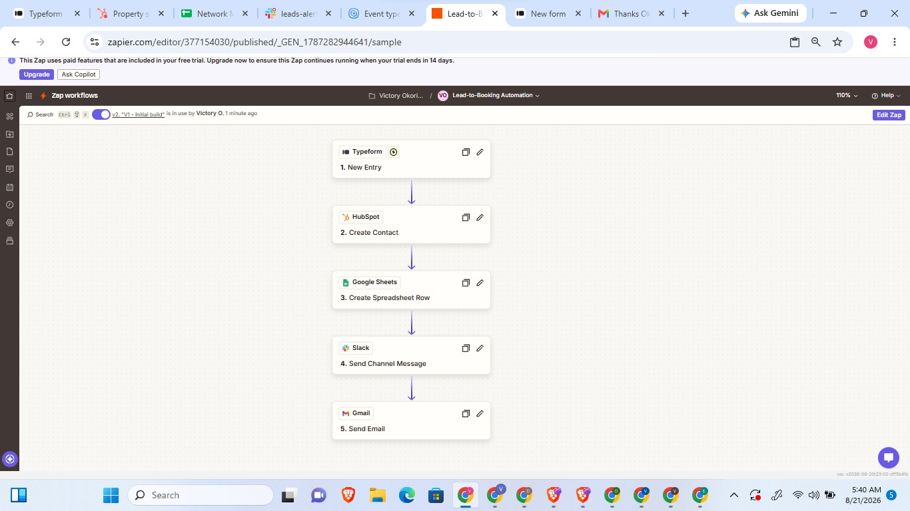

CASE 01 — ZAPIER
Lead-to-Booking Automation
TypeformHubSpotSlackGmail
A new Typeform lead automatically becomes a HubSpot contact, gets logged to a tracking sheet, triggers an instant Slack alert to the sales channel with a follow-up window, and receives a personalized booking email — all within seconds, with zero manual data entry.